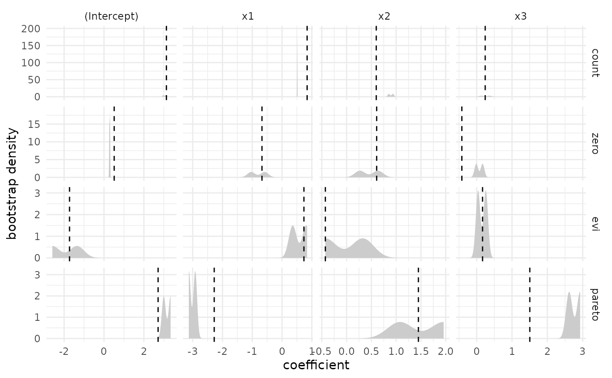
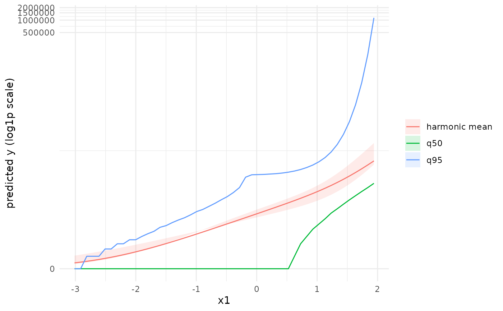

Plots for evzinb / evinb models
Usage
# S3 method for class 'evzinb'
plot(
x,
type = c("states", "prediction", "coefficients", "ppc", "ppc_quantiles"),
variable = NULL,
quantiles = c(0.5, 0.95),
...
)
# S3 method for class 'evinb'
plot(
x,
type = c("states", "prediction", "coefficients", "ppc", "ppc_quantiles"),
variable = NULL,
quantiles = c(0.5, 0.95),
...
)Arguments
- x
A fitted
evzinb/evinbmodel.- type
"states"- prior state probabilities overvariable, faceted by state;"prediction"- harmonic-mean prediction with a bootstrap ribbon plus the requested quantiles overvariable(log1p y axis);"coefficients"- bootstrap densities of each coefficient, faceted by component and term, with the point estimate marked;"ppc"- posterior predictive check: a binned observed-vs-expected frequency panel;"ppc_quantiles"- posterior predictive check on the tails: the observed sample quantiles for probabilitiesc(0.5, 0.75, 0.9, 0.95, 0.99, 0.999)against the median simulated quantile (with a 5-95% band across simulations) onlog1paxes, with a 45-degree reference line.- variable
Covariate to vary (required for
"states"and"prediction").- quantiles
Quantiles to draw for
type = "prediction".- ...
Passed to
predict_grid.
Examples
# \donttest{
data(genevzinb2)
model <- evzinb(y ~ x1 + x2 + x3, data = genevzinb2, n_bootstraps = 5)
#> evinf: using a data-driven candidate range for C_EV: [173, 263]. Pass `c.lim` / `control = evinf_control(c.lim = ...)` to override.
plot(model, type = "coefficients")

plot(model, type = "prediction", variable = "x1")
#> Warning: Removed 100 rows containing missing values or values outside the scale range
#> (`geom_ribbon()`).

# }
if (FALSE) { # \dontrun{
data(hks)
hks_mod <- evzinb(osvAll ~ troopLag + lntpop + brv_AllLag_log,
data = hks, n_bootstraps = 5, multicore = FALSE)
plot(hks_mod, type = "prediction", variable = "troopLag")
} # }